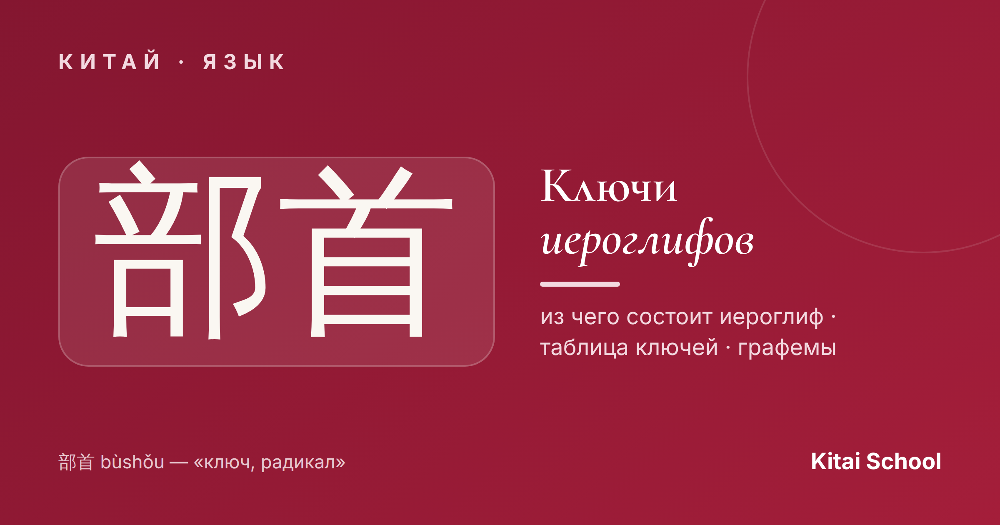
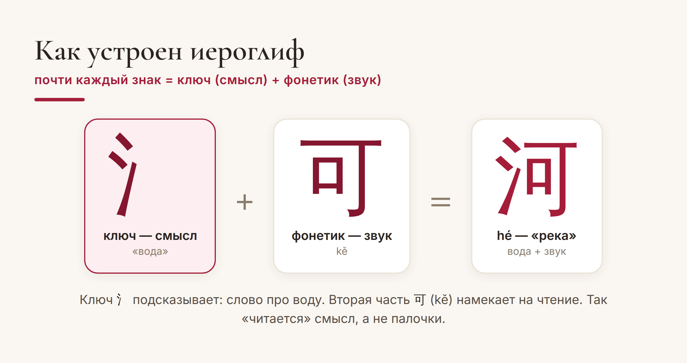
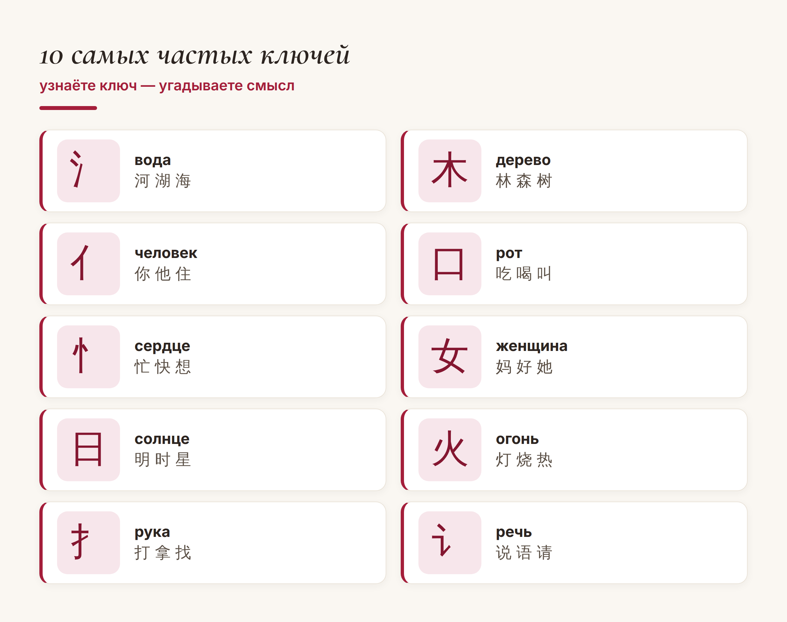
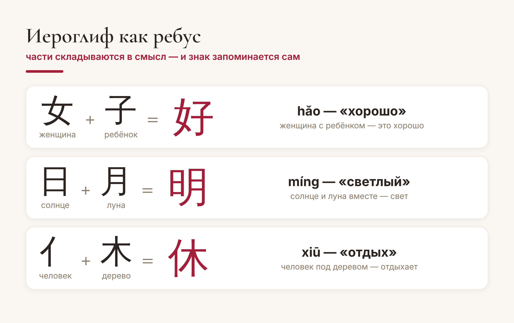

Китай · язык

Со стороны китайский иероглиф выглядит как случайный набор чёрточек, который остаётся только зазубрить. Это главное заблуждение новичка. На самом деле почти каждый иероглиф — это конструктор, собранный из смысловых деталей. И у большинства этих деталей есть логика: увидев знакомую часть, вы можете угадать, о чём иероглиф, даже не зная его.
Эти «детали» называются ключами. Разберёмся, что такое ключ, сколько их всего и как они превращают зубрёжку в осмысленное чтение.
Ключ, по-китайски 部首 (bùshǒu, дословно «глава раздела»), — это смысловая часть иероглифа, которая намекает на его значение. Классический пример — «капли воды» 氵. Стоит увидеть их слева, и можно уверенно предположить: иероглиф как-то связан с водой или жидкостью. Так и есть: 河 (hé) — река, 湖 (hú) — озеро, 海 (hǎi) — море, 洗 (xǐ) — мыть.
То есть ключ — это подсказка. Он задаёт «тему» иероглифа, а вторая часть часто подсказывает звучание. Понимая это, вы читаете не «палочки», а смысл.

Классическая таблица китайских ключей насчитывает 214 знаков — её составили ещё в словаре эпохи Канси (康熙字典) более трёхсот лет назад, и по ней иероглифы упорядочивают в словарях до сих пор. Но пугаться числа 214 не нужно: в реальной жизни активно работают несколько десятков самых частых ключей, и именно они встречаются в тысячах иероглифов.
Ключ и графема — не одно и то же. Графема — это любой мельчайший «кирпичик», из которого сложен иероглиф. А ключ — это тот самый главный кирпичик, по которому иероглиф ищут в словаре и который отвечает за смысл. Проще говоря: все ключи — графемы, но не всякая графема — ключ.
Вот ключи, которые вы будете встречать буквально каждый день. Запомните их — и десятки иероглифов станут «читаемыми»:

Самое приятное — когда части складываются в маленькую историю. Тогда иероглиф запоминается сам собой, без зубрёжки:

Видите? Это не абстрактные закорючки, а картинки со смыслом. Именно поэтому опытные ученики не «зубрят иероглифы», а разбирают их на части — так знак держится в памяти в разы крепче.
Ключи дают три очень конкретные выгоды:
1. Угадывать смысл. Незнакомый иероглиф с ключом «болезнь» 疒 — почти наверняка про недуг, а с ключом «металл» 钅 — про металл или деньги.
2. Искать в словаре. Бумажные и многие электронные словари построены именно по ключам — без них не найти нужный знак.
3. Быстрее запоминать. Когда иероглиф разложен на знакомые части, он держится в памяти в разы крепче, чем «набор палочек».
Мой совет ученикам всегда один: не пытайтесь выучить все 214 ключей списком за один вечер. Возьмите десятка три-четыре самых частых, научитесь узнавать их «в лицо» — и иероглифика из пугающей стены превратится в понятную систему. А дальше, как обычно, 慢慢来 — шаг за шагом.
Ясных вам иероглифов! 积少成多。